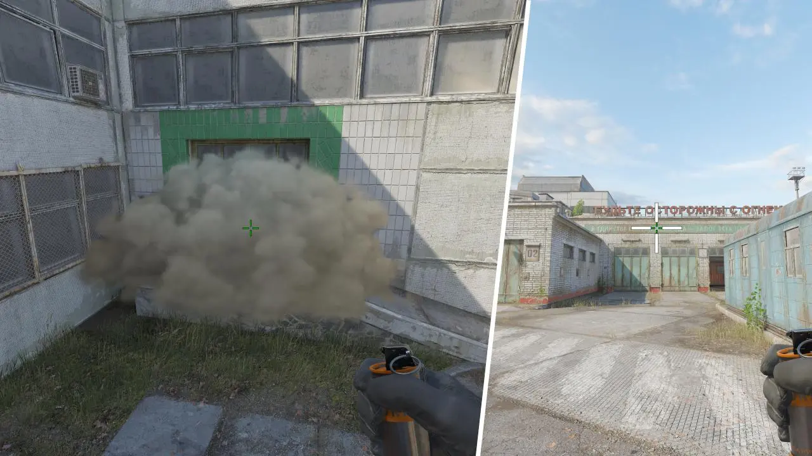
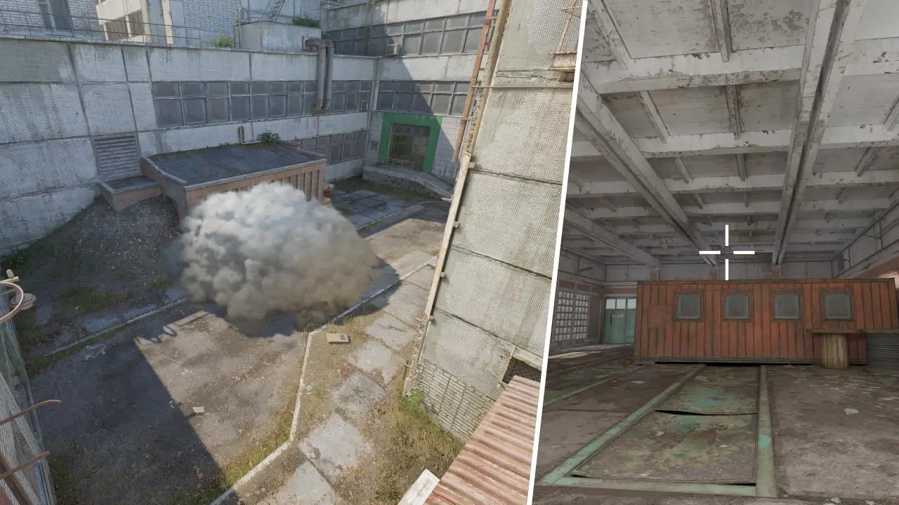
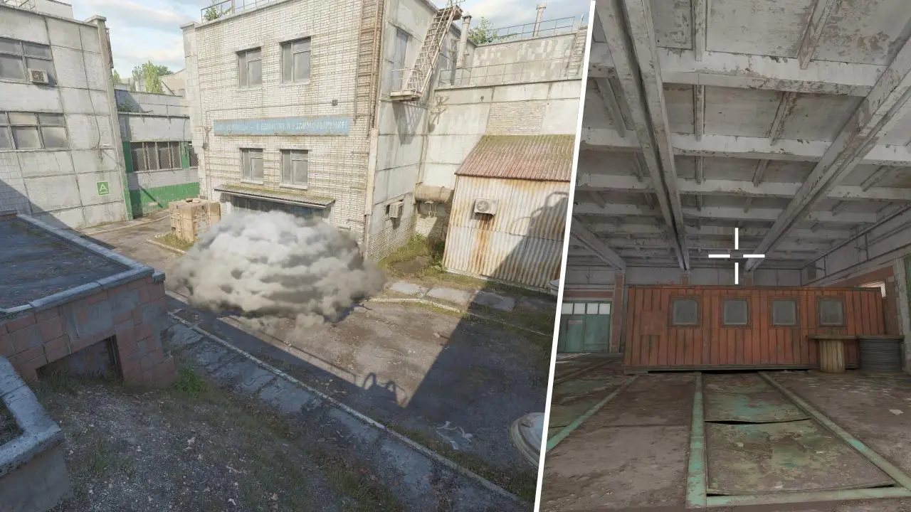
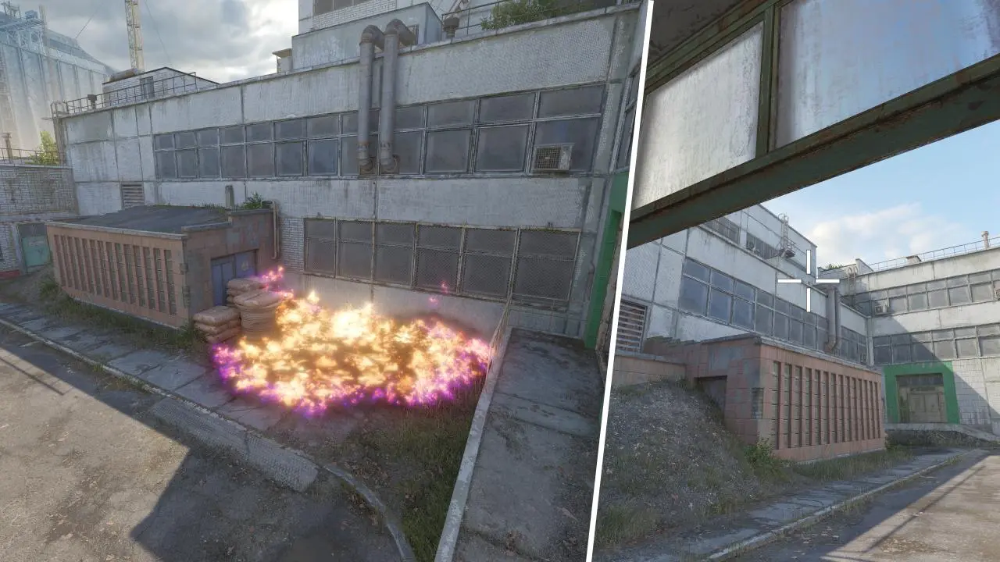
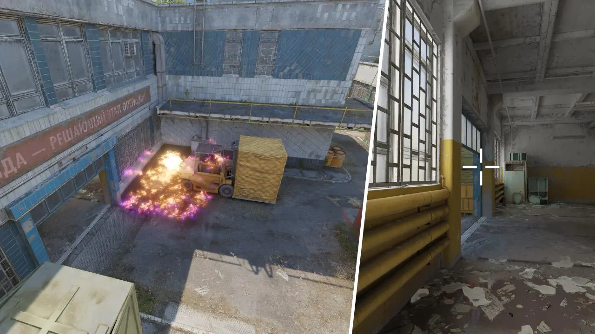
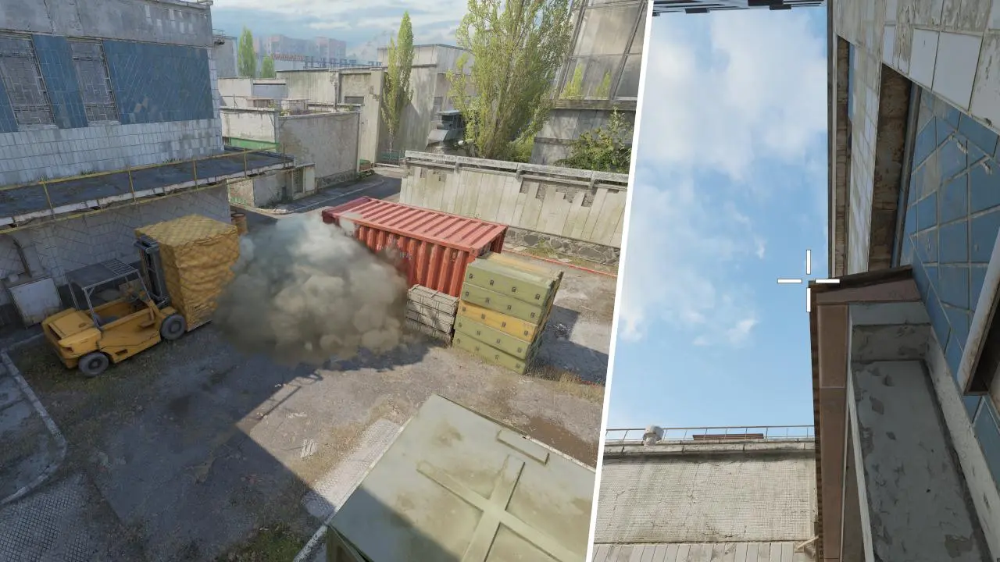
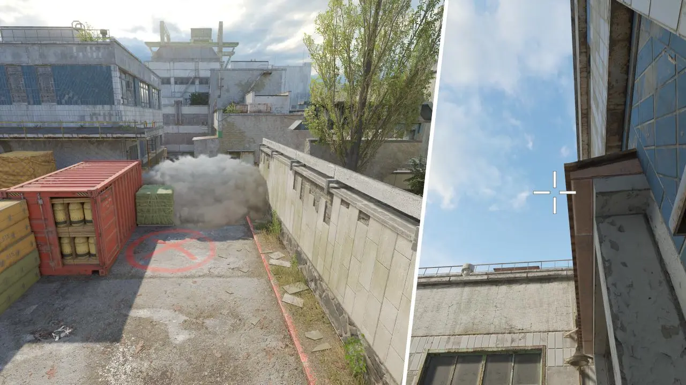
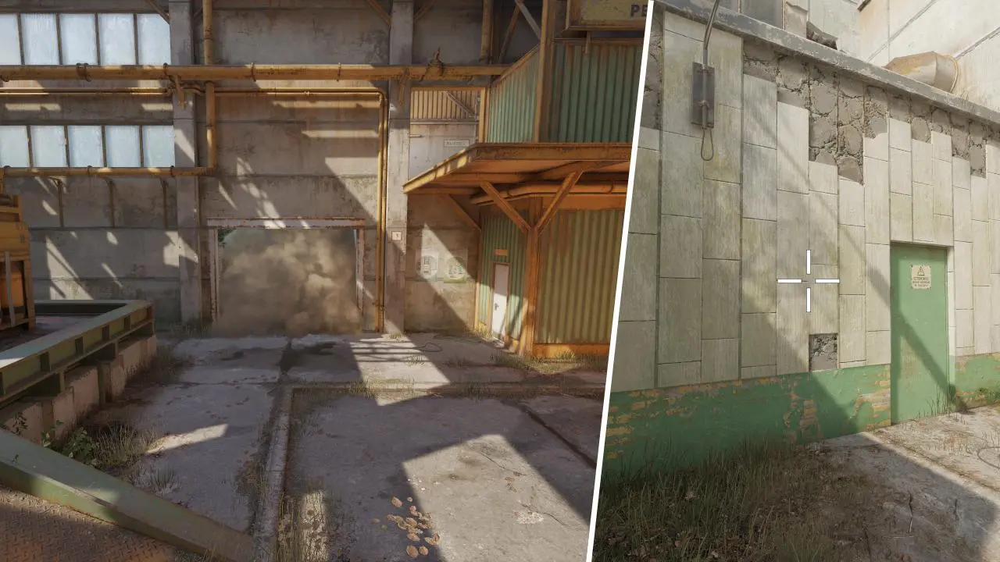
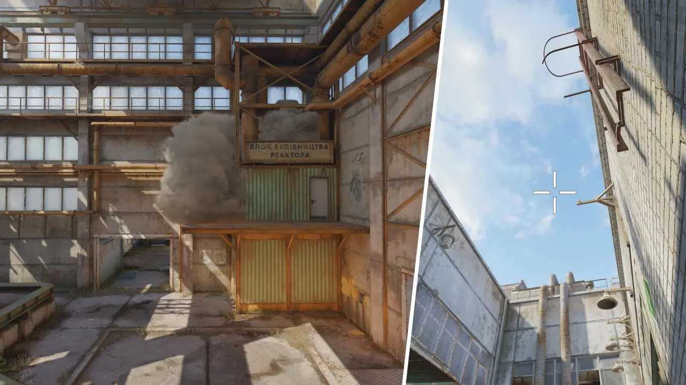
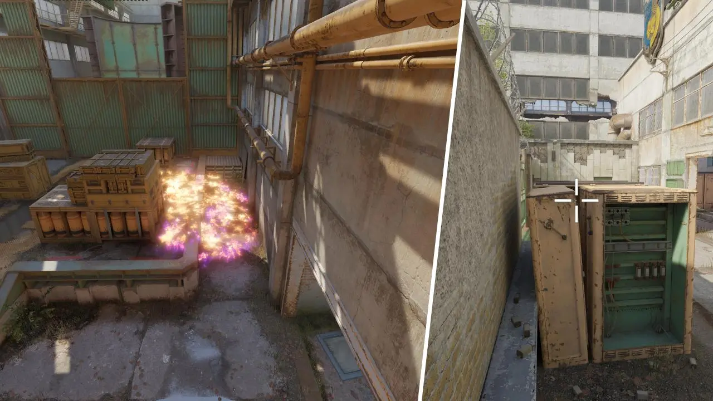

Active Duty
Valve добавила Cache в действующую ротацию сезона 5 вместо Overpass. Это подтверждённый официальный статус, а не тег стороннего сайта.
L!S · командный брифинг / 07.09.2026
Не учим «раскид». Учим пятиголовое решение: занять Мид, назвать сигнал и войти двумя линиями.
Active Duty · версия 03.08.2026

Версия карты · честный статус
Valve добавила Cache в действующую ротацию сезона 5 вместо Overpass. Это подтверждённый официальный статус, а не тег стороннего сайта.
Последняя отдельная правка Cache: коллизии, щели и объекты; удалён буст снаружи A. Старый буст снаружи A не тренируем.
Последняя Cache-правка Valve: 03.08.2026Каталог Cache существует. Его меню всё ещё показывало «Reserve» — это конфликт метаданных; статус берём только у Valve.
актуальная версияКонтракт занятия
14 опорных коллаутов за 25 секунд. Формат: число → зона → направление.
Выход стартует только после «ГОТОВ»×5; GO запускает волну, STOP возвращает в удержание.
Два сплита и быстрый B — по 3 чистых повтора. Точные позиции гранат — 5/5 у владельца и страховки.
Карта · общий язык
1Мейн A
2Скрип
3Погрузчик
4Квад
5Хайвей
6Мид
7Гараж
8Буст
9Белый ящик
10Венты
11Мейн B
12Шашки
13Хевен
14Санрум
Коллауты · A
1Мейн A
2Скрип
3Погрузчик
4Квад
5Хайвей
Коллауты · Мид
1Гараж
2Буст
3Белый ящик
4Мид
5Хайвей
6Венты
Коллауты · B
1Мейн B
2Санрум
3Шашки
4Венты
5Хевен
Роли · пятёрка
1D4ba · первый A
2d0lfero · скрытый
3L!S · капитан / Мид
4middle · гранаты B
5Reconnecting · бомба
Атака · T-дефолт
1Мейн A
2Удержание Скрипа
3Инфо из Гаража
4Гранаты Санрума
5Контакт Мейн B
Атака · Контроль Мида
1Пара дымов
2Буст / флешка
3Пара у Белого ящика
4Угроза Вентам
5Угроза Хайвею
Протокол · GO / STOP
Входим сейчас. Граната уже летит.
Не выходим. Живём и возвращаем углы.
Выход A · Мейн A + Скрип
1Первый + размен
2Скрытый в Скрипе
3Молотов в Погрузчик
4Проверка Квада
5Отрезать Хайвей
Выход A · роли
Дым в дальний сайт, молотов в Погрузчик, флешка. Говорит «готов» последним.
Не ищет все киллы: очищает Погрузчик и создаёт путь.
Дистанция одного корпуса. Бомба не блокирует дверь.
Открывает на GO, не раньше. Режет внимание, затем Хайвей.
Выход B · Мейн B + Венты
1Гранаты / бомба
2Пара Мейн B
3Пара Венты
4Клещи в Шашках
5Закрыть Хевен
Сплит B · таймлайн
Трое в Мейн B у Санрума. Двое у Вентов со стороны Белого ящика. Все называют готовность.
Дым КТ + молотов в Хедшот. Флешка объявлена: флешка через 2.
Мейн B делает контакт. Венты ломаются сразу под звук гранат.
Бомба — стандарт. Один Мейн B, один Шашки, один отрезает Хевен/КТ.
Быстрый B · наказание
1Дым КТ
2Первый контакт
3Размен / Хедшот
4Флешка в Хевен
5Бомба третья
Защита · КТ-дефолт
1Опорник A · Квад
2Помощь A · Хайвей
3Мид · Мешки
4Помощник B · Шашки
5Опорник B · сайт
Защита · реакции КТ
Защита · маршруты помощи
1Мид отходит
2Задержка A
3Удержание Шашек
4Сбор в Хевене
5Безопасный маршрут КТ
Гранаты · правило допуска
С места или в прыжке: пять посадок подряд у владельца и страховки.
С разбега или в движении: три результата подряд в игровом темпе, без зазора.
Не «почти». Удаляем из выхода до повторной проверки на текущей версии.
Все 10 ссылок актуальны; посадка после патча 03.08 — серверный допуск.
Гранаты · 01–05

Респ T → Коннектор
Владелец: L!S · запасной: middle
с разбега в прыжке + ЛКМ · точная
схема ↗3/3
Гараж → Левый Мид
Владелец: middle · запасной: L!S
с места ЛКМ · точная
схема ↗5/5
Гараж → Правый Мид
Владелец: d0lfero · запасной: D4ba
с места ЛКМ · точная
схема ↗5/5
Гараж → Мешки
Владелец: d0lfero · запасной: L!S
с места ЛКМ · точная
схема ↗5/5
Мейн A → Погрузчик
Владелец: D4ba · запасной: d0lfero
с разбега ЛКМ · точная
схема ↗3/3Гранаты · 06–10

Перед Скрипом → Погрузчик
Владелец: d0lfero · запасной: D4ba
с места ЛКМ · точная
схема ↗5/5
Перед Скрипом → дальний A
Владелец: d0lfero · запасной: L!S
с места ЛКМ · связка
схема ↗5/5
Санрум → КТ
Владелец: Reconnecting · запасной: middle
с места в прыжке + ЛКМ+ПКМ · точная
схема ↗5/5
Мусор → Хевен
Владелец: D4ba · запасной: Reconnecting
с места в прыжке + ЛКМ · особо точная
схема ↗5/5
Санрум → Хедшот
Владелец: Reconnecting · запасной: D4ba
с места в прыжке + ЛКМ · точная
схема ↗5/5Сервер · до 25 минут практики
Ведущий кликает радар. Игрок: зона + соседний путь. Ошибка = круг заново.
10 позиций: владелец + страховка. Записать 5/5 или 3/3; провал не переносится в выход.
Мейн A + Скрип, Мейн B + Венты, быстрый B. По 3 повтора; судим только синхрон GO.
Ведущий даёт 6 ложных/реальных сигналов. Защита двигается только по протоколу.
Домашка · до следующей карты
Клип 5/5 или 3/3 на актуальной Cache. Имя файла: cache_role_nade_date.
Повторить гранаты соседа. На созвоне смена владельца без подготовки.
Отметить по одному GO, STOP и поздней ротации КТ. Только timestamp + факт.
Финальный тест · 8 вопросов
Active Duty с 08.07.2026; последняя Cache-правка 03.08.2026.
Белый ящик занят, а Хайвей и Венты не отдаются бесплатно.
«ГОТОВ»×5, ключевая граната летит, GO по флешке.
Примерно на одну секунду после контакта Мейн B.
Не попала ключевая граната; нет второй линии / бомба отрезана.
Мид через Хевен; помощник A только после доказательства входа.
5/5 у владельца и страховки на текущей версии.
Точка буста вне A.